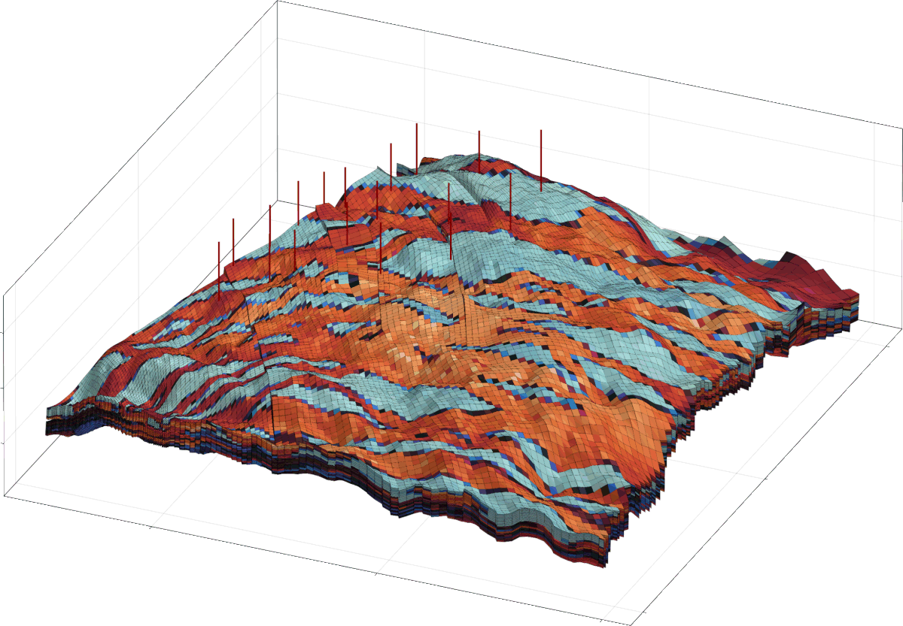

GeoEnergyIO
Documentation for GeoEnergyIO.
Parsing of simulation cases
The main feature of this module is at the time of writing a parser for .DATA reservoir simulation cases. The format originated with the Eclipse reservoir simulator produced by SLB and is now used by many reservoir simulators. The most useful publicly available description of one such dialect is found in the OPM Flow manual.
GeoEnergyIO.InputParser.parse_data_file — Functionparse_data_file(filename; units = :si)
parse_data_file(filename; units = :field)
data = parse_data_file("MY_MODEL.DATA")Parse a .DATA file given by the path in filename (industry standard input file) into a Dict with String keys. Units will be converted to strict SI unless you pass an alternative unit system like units = :field. Setting units = nothing will skip unit conversion. Note that the simulators in JutulDarcy.jl assumes that the unit system is internally consistent. It is highly recommended to parse to the SI units if you want to perform simulations with JutulDarcy.jl.
The best publicly available documentation on this format is available from the Open Porous Media (OPM) project's webpages: OPM Flow manual .
Keyword arguments
warn_parsing=true: Produce a warning when keywords are not supported (or partially supported) by the parser.warn_feature=true: Produce a warning when keywords are supported, but have limited or missing support in the numerical solvers inJutulDarcy.jl.units=:si: Symbol that indicates the unit system to be used in the output. Setting this tonothingwill return values without conversion, i.e. exactly what is in the input files.:siwill use strict SI. Other alternatives are:fieldand:metric.:labis currently unsupported.verbose=false: Produce verbose output about parsing progress. For larger files, a lot of output will be generated. Useful when figuring out where a parser fails or spends a lot of time.
Note
This function only covers a small portion of the keywords that exist for various simulators. You will get warnings that indicate the level of support for keywords in both the parser and the numerical solvers when known keywords with limited support. Pull requests for new keywords are welcome!
The SUMMARY section is skipped due to the large volume of available keywords that are not essential to define simulation cases.
Let us for example parse the SPE1 dataset, turning into a nested Dict containing all the entries of the data file. We use the unexported test_input_file_path utility to get the path of a test file.
using GeoEnergyIO
spe1_pth = GeoEnergyIO.test_input_file_path("SPE1", "SPE1.DATA")
spe1 = parse_data_file(spe1_pth)Dict{String, Any} with 6 entries:
"RUNSPEC" => OrderedDict{String, Any}("TITLE"=>"SPE1 - CASE 2", "DIMENS"=>[1…
"GRID" => OrderedDict{String, Any}("cartDims"=>(10, 10, 3), "CURRENT_BOX"…
"PROPS" => OrderedDict{String, Any}("PVTW"=>Any[[2.77e7, 1.038, 4.67022e-1…
"SUMMARY" => OrderedDict{String, Any}()
"SCHEDULE" => Dict{String, Any}("STEPS"=>OrderedDict{String, Any}[OrderedDict…
"SOLUTION" => OrderedDict{String, Any}("EQUIL"=>Any[[2560.32, 3.30948e7, 2575…Handling unsupported keywords
Not all keywords are supported by the parser, but not all keywords are important. The input format is such that it is difficult to automatically skip keywords, but you an manually add keywords to the skip list:
GeoEnergyIO.InputParser.skip_kw! — Functionskip_kw!(kw, num, msg = nothing)Add a keyword to list of records that will be skipped on parsing.
kw is the symbol (usually capitalized) of the keyword to skip, num is the number of expected records:
- 0 means that the keyword to skip has no data (for example "WATER" with no data to follow)
- 1 means that the keyword has a single record terminated by
/ - Any other number means a fixed number of lines, without termination by empty record.
- Inf means that the keyword has any number of records, terminated by a record without entries.
Adding keywords to the skip list is not persistent across Julia sessions and can be added to the top of your script. Contributions to the global skip list defined in the __init__ function of the parser are welcome.
using GeoEnergyIO
# Skip keyword without data
GeoEnergyIO.InputParser.skip_kw!(:MY_KW, 0)
# Keyword with a single record of data, e.g.
# MY_DATA_KW
# "some data" 1 2 3 /
GeoEnergyIO.InputParser.skip_kw!(:MY_DATA_KW, 1)
# Keyword with many records, terminated by empty record:
# MY_LONG_DATA_KW
# "some data" 1 2 3 /
# "more data" 4 5 6 /
# "even more data" 1 9 /
# /
GeoEnergyIO.InputParser.skip_kw!(:MY_LONG_DATA_KW, Inf)58-element Vector{Tuple{Symbol, Union{Float64, Int64}, Union{Nothing, GeoEnergyIO.InputParser.PARSER_WARNING}}}:
(:PETOPTS, 1, nothing)
(:PARALLEL, 1, nothing)
(:MULTSAVE, 1, nothing)
(:VECTABLE, 1, nothing)
(:MULTSAVE, 1, nothing)
(:MEMORY, 1, nothing)
(:OPTIONS3, 1, nothing)
(:TSCRIT, 1, GeoEnergyIO.InputParser.PARSER_JUTULDARCY_MISSING_SUPPORT)
(:CVCRIT, 1, GeoEnergyIO.InputParser.PARSER_JUTULDARCY_MISSING_SUPPORT)
(:RPTPRINT, 1, nothing)
⋮
(:VFPPROD, Inf, GeoEnergyIO.InputParser.PARSER_MISSING_SUPPORT)
(:VFPINJ, Inf, GeoEnergyIO.InputParser.PARSER_MISSING_SUPPORT)
(:WTRACER, Inf, GeoEnergyIO.InputParser.PARSER_MISSING_SUPPORT)
(:GCONINJE, Inf, GeoEnergyIO.InputParser.PARSER_MISSING_SUPPORT)
(:WTEST, Inf, GeoEnergyIO.InputParser.PARSER_MISSING_SUPPORT)
(:WLIST, Inf, GeoEnergyIO.InputParser.PARSER_MISSING_SUPPORT)
(:MY_KW, 0, nothing)
(:MY_DATA_KW, 1, nothing)
(:MY_LONG_DATA_KW, Inf, nothing)Parsing and processing of corner-point grids
Corner-point meshes are the de-facto standard format for simulation of subsurface flow. These meshes are semi-structured, but can have quite complex structure in practice due to eroded and collapsed cells and the presence of faults. This module includes a processor to convert the input format into a mesh that can be used for simulation. Converting the corner-points into a mesh with a connected topology is non-trivial, but the included algorithm has been verified on a number of real-field assets.
There are two main functions to parse and process corner-point inputs:
GeoEnergyIO.InputParser.parse_grdecl_file — Functionparse_grdecl_file("mygrid.grdecl"; actnum_path = missing, kwarg...)Parse a GRDECL file separately from the full input file. Note that the GRID section does not contain units - passing the input_units keyword is therefore highly recommended.
Keyword arguments
actnum_path=missing: Path to ACTNUM file, if this is not included in the main file.units=:si: Units to use for return values. Requiresinput_unitsto be set.input_units=nothing: The units the file is given in.verbose=false: Toggle verbosity.extra_paths: List of extra paths to parse as a part of grid section, ex:["PORO.inc", "PERM.inc"].
GeoEnergyIO.CornerPointGrid.mesh_from_grid_section — Functionmesh_from_grid_section(f, actnum = missing, repair_zcorn = true)Generate a Jutul unstructured mesh from a grid section. The input arugment f can be one of the following:
- (1) An already parsed complete data file read using
parse_data_file. The "GRID" field will be used. - (2) A parsed "GRID" section from
parse_grdecl_file. - (3) The file-name of a
.GRDECLfile to be parsed before processing.
Optionally the actnum can be specified separately. The actnum should have equal length to the number of logical cells in the grid with true/false indicating if a cell is to be included in the processed mesh.
The additional argument repair_zcorn only applies when the grid is defined using COORD/ZCORN arrays. If set to true, the monotonicity of the ZCORN coordinates in each corner-point pillar will be checked and optionally fixed prior to mesh construction. Note that if non-monotone ZCORN are fixed, if the first input argument to this function is an already parsed data structure, the ZCORN array will be mutated during fixing to avoid a copy.
Example corner point meshes
The module ships with several corner point grids suitable for testing. These include partially collapsed cells, faults and other degenerate cases that the parser should be able to handle. We can make a few plots of such test grids. The first example is a single hexahedral cell:
using GeoEnergyIO, Jutul, CairoMakie
pth = GeoEnergyIO.test_input_file_path("grdecl", "1cell.txt")
grdecl = parse_grdecl_file(pth)
g = mesh_from_grid_section(grdecl)
fig, ax, plt = plot_mesh(g, shading = false, rasterize = true)
Jutul.plot_mesh_edges!(ax, g)
fig
To understand a bit more of how this format behaves in practice, we can look at a faulted mesh:
using GeoEnergyIO, Jutul, CairoMakie
pth = GeoEnergyIO.test_input_file_path("grdecl", "raised_col_sloped.txt")
grdecl = parse_grdecl_file(pth)
g = mesh_from_grid_section(grdecl)
fig, ax, plt = plot_mesh(g, shading = NoShading, rasterize = true)
Jutul.plot_mesh_edges!(ax, g)
fig
More complicated meshes include multiple faults. One synthetic test model is the model3 case from MRST:
using GeoEnergyIO, Jutul, CairoMakie
pth = GeoEnergyIO.test_input_file_path("grdecl", "model3_5_5_5.txt")
grdecl = parse_grdecl_file(pth)
g = mesh_from_grid_section(grdecl)
ix = collect(1:number_of_cells(g))
fig = Figure()
ax = Axis3(fig[1,1], zreversed = true, azimuth = 2.0)
plot_cell_data!(ax, g, ix, shading = NoShading, rasterize = true, colormap = :seaborn_icefire_gradient)
fig
We can also parse a high-resolution version of the same case:
using GeoEnergyIO, Jutul, CairoMakie
pth = GeoEnergyIO.test_input_file_path("grdecl", "model3_20_20_50.txt")
grdecl = parse_grdecl_file(pth)
g = mesh_from_grid_section(grdecl)
ix = collect(1:number_of_cells(g))
fig = Figure()
ax = Axis3(fig[1,1], zreversed = true, azimuth = 2.0)
plot_cell_data!(ax, g, ix, shading = NoShading, rasterize = true, colormap = :seaborn_icefire_gradient)
fig
The parser has been tested on many complex models. Here is an example mesh parsed from the OLYMPUS Optimization Benchmark Challenge where the parsed porosity is plotted together with the wells:

We can parse this mesh in the same manner as before:
using GeoEnergyIO, Jutul, CairoMakie
pth = GeoEnergyIO.test_input_file_path("OLYMPUS_1", "OLYMPUS_GRID.GRDECL")
grdecl = parse_grdecl_file(pth)
g = mesh_from_grid_section(grdecl)
ix = collect(1:number_of_cells(g))
fig = Figure()
ax = Axis3(fig[1,1], zreversed = true, azimuth = 2.0)
plot_cell_data!(ax, g, ix, shading = NoShading, rasterize = true, colormap = :seaborn_icefire_gradient)
fig
Utilities
GeoEnergyIO.InputParser.get_data_file_cell_region — Functionregion = get_data_file_cell_region(data, t::Symbol; active = nothing)
satnum = get_data_file_cell_region(data, :satnum)
pvtnum = get_data_file_cell_region(data, :pvtnum, active = 1:10)Get the region indicator of some type for each cell of the domain stored in data (the output from parse_data_file). The optional keyword argument active can be used to extract the values for a subset of cells.
t should be one of the following:
:satnum(saturation function region):pvtnum(PVT function region):eqlnum(equilibriation region):eosnum(equation-of-state region)
GeoEnergyIO.InputParser.number_of_tables — Functionnumber_of_tables(outer_data, t::Symbol)Number of declared tables for given type t. Should be one of the following:
:satnum(saturation function region):pvtnum(PVT function region):eqlnum(equilibriation region):eosnum(equation-of-state region)
Internals
GeoEnergyIO.InputParser.keyword_default_value — Functionkeyword_default_value(x::AbstractString, T::Type)Get the default value of a keyword (as String or ::Val{X} where X is a Symbol) when placed in a array with element type T. This is used to initialize defaulted entries when using COPY, ADD, MULTIPLY and so on.